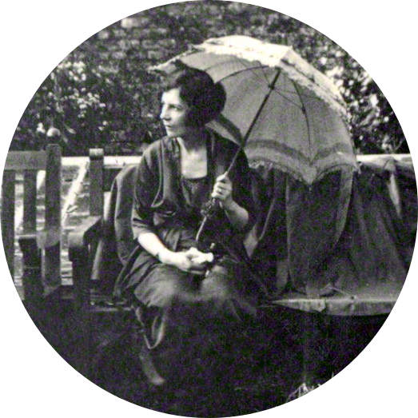

Vivienne Haigh-Wood Eliot (also Vivien, born Vivienne Haigh; 28 May 1888 – 22 January 1947) was the first wife of American-British poet T. S. Eliot, whom she married in 1915, less than three months after their introduction by mutual friends, when Vivienne was a governess in Cambridge and Eliot was studying at Oxford.
Vivienne had many serious health problems, beginning with tuberculosis of the arm as a child, and the marriage appeared to exacerbate her mental health issues. Husband Eliot would not consider divorce, but formally separated from Vivienne in 1933.
Research into their relationship has been hampered by lack of access to her diaries, the copyright of which was granted to Eliot's widow Valerie Eliot, but surviving letters have been published.